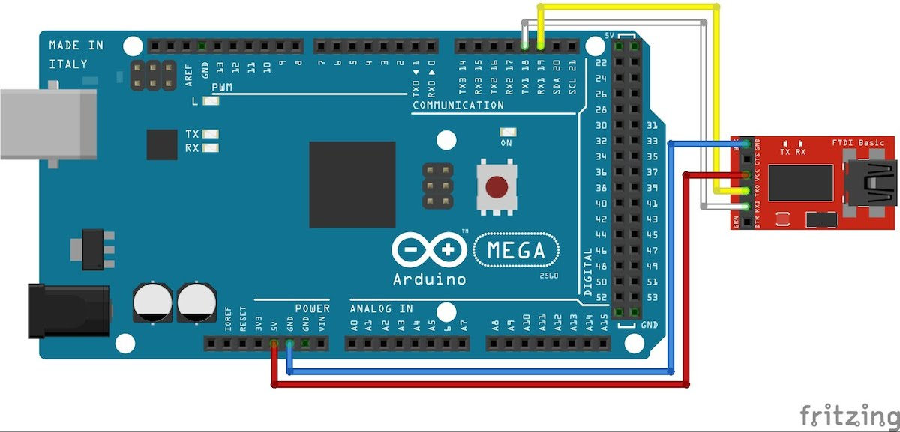

テキスト送信
Arduino側の設定
回路を作成し、スケッチの入力を行います。
今回はブレッドボードを使用せず、シリアルアダプタと直接繋げます。
なお、Arduino UnoとArduino Megaでは配線とスケッチが少し異なりますので、別々に記載します。
Adrduino Uno
回路 (Arduino Uno)

スケッチ (Arduino Uno)
1
2
3
4
5
6
7
8
9
10
11
12
13
14
15
16
17
18
19
20
21 | #include <SoftwareSerial.h>
//androidで使用するピンを指定
SoftwareSerial android(2,3);
void setup(){
//android用のシリアルのポートを設定
android.begin(9600);
// arduinoのシリアルモニタ用
Serial.begin(19200);
Serial.write("init");
}
void loop(){
if(android.available()){
Serial.write(android.read());
}
}
|
Arduino Mega

回路 (Arduino Mega)
Arduino 18 TX1 -> USB Serial RXD
Arduino 19 RX1 -> USB Serial TXD
参考
http://arduino.cc/en/Serial/begin
スケッチ (Arduino Mega)
18, 19は、TX1, RX1となっており、Arduinoでは Serial1.begin(速度)で設定できる。
1
2
3
4
5
6
7
8
9
10
11
12
13
14
15
16 | void setup(){
//android用のシリアルのポートを設定
Serial1.begin(9600);
// arduinoのシリアルモニタ用
Serial.begin(19200);
Serial.write("init");
}
void loop(){
if(Serial1.available()){
Serial.write(Serial1.read());
}
}
|
Android側の設定
Androidコード入力
MainActivity.java
1
2
3
4
5
6
7
8
9
10
11
12
13
14
15
16
17
18
19
20
21
22
23
24
25
26
27
28
29
30
31
32
33
34
35
36
37
38
39
40
41
42
43
44
45
46
47
48
49
50
51
52
53
54
55
56
57
58
59
60
61
62
63
64
65
66
67
68
69
70
71
72
73
74
75
76
77
78
79
80
81
82
83
84
85
86
87
88
89
90
91
92
93
94
95
96
97
98
99
100
101
102
103
104
105
106
107
108
109
110
111
112
113
114
115
116
117
118
119
120
121
122
123
124
125
126
127
128
129
130
131
132
133
134 | package gclue.com.myusbhost;
import android.content.BroadcastReceiver;
import android.content.Context;
import android.content.Intent;
import android.hardware.usb.UsbManager;
import android.os.Bundle;
import android.support.v7.app.ActionBarActivity;
import android.util.Log;
import android.view.Menu;
import android.view.MenuItem;
import android.view.View;
import android.widget.Button;
import android.widget.Toast;
import com.ftdi.j2xx.D2xxManager;
import com.ftdi.j2xx.FT_Device;
public class MainActivity extends ActionBarActivity {
private FT_Device ftDev = null;
private static Context mContext;
private D2xxManager ftdid2xx;
private static final String TAG = "USB";
private int iavailable = 0;
private static final int readLength = 512;
byte[] readData;
char[] readDataToText;
private Button mOutputButton;
@Override
protected void onCreate(Bundle savedInstanceState) {
super.onCreate(savedInstanceState);
setContentView(R.layout.activity_main);
try {
ftdid2xx = D2xxManager.getInstance(this);
} catch (D2xxManager.D2xxException ex) {
Log.e(TAG,ex.toString());
}
mContext = this.getBaseContext();
openUsb();
// ボタンが押されたらUSBに値を送り込む
mOutputButton = (Button)findViewById(R.id.outputButton);
mOutputButton.setOnClickListener(new View.OnClickListener() {
@Override
public void onClick(View v) {
SendMessage("1");
}
});
}
public void openUsb(){
int devCount = 0;
devCount = ftdid2xx.createDeviceInfoList(this);
if (devCount <= 0)
{
Toast.makeText(this, "デバイスが発見できません。" + Integer.toString(devCount), Toast.LENGTH_LONG).show();
Log.i(TAG,"デバイスが発見できましせんでした。");
return;
}
else{
Toast.makeText(this, "" + devCount + "個のデバイスを発見しました。", Toast.LENGTH_LONG).show();
Log.i(TAG,"" + devCount + "個のデバイスを発見しました。");
}
if(null == ftDev)
{
ftDev = ftdid2xx.openByIndex(mContext, 0);
}
else
{
synchronized(ftDev)
{
ftDev = ftdid2xx.openByIndex(mContext, 0);
}
}
//ftDev.setBitMode((byte) 0, D2xxManager.FT_BITMODE_RESET);
ftDev.setBaudRate(9600);
ftDev.setDataCharacteristics(D2xxManager.FT_DATA_BITS_8, D2xxManager.FT_STOP_BITS_1, D2xxManager.FT_PARITY_NONE);
ftDev.setFlowControl(D2xxManager.FT_FLOW_NONE, (byte) 0x0b, (byte) 0x0d);
ftDev.purge((byte) (D2xxManager.FT_PURGE_TX | D2xxManager.FT_PURGE_RX));
ftDev.restartInTask();
}
@Override
public boolean onCreateOptionsMenu(Menu menu) {
// Inflate the menu; this adds items to the action bar if it is present.
getMenuInflater().inflate(R.menu.menu_main, menu);
return true;
}
@Override
public boolean onOptionsItemSelected(MenuItem item) {
// Handle action bar item clicks here. The action bar will
// automatically handle clicks on the Home/Up button, so long
// as you specify a parent activity in AndroidManifest.xml.
int id = item.getItemId();
//noinspection SimplifiableIfStatement
if (id == R.id.action_settings) {
return true;
}
return super.onOptionsItemSelected(item);
}
public void SendMessage(String msg) {
if(ftDev == null){
return;
}
synchronized (ftDev) {
if (ftDev.isOpen() == false) {
Log.e("j2xx", "SendMessage: device not open");
return;
}
ftDev.setLatencyTimer((byte) 16);
if (msg != null) {
byte[] OutData = msg.getBytes();
ftDev.write(OutData, msg.length());
}
}
}
}
|
activity_main.xml
1
2
3
4
5
6
7
8
9
10
11
12
13 | <?xml version="1.0" encoding="utf-8"?>
<LinearLayout xmlns:android="http://schemas.android.com/apk/res/android"
android:layout_width="fill_parent"
android:layout_height="fill_parent"
android:orientation="vertical" >
<Button android:id="@+id/outputButton"
android:layout_width="wrap_content"
android:layout_height="wrap_content"
android:text="Button"
android:layout_gravity="center_horizontal" />
</LinearLayout>
|
AndroidManifext.xml
1
2
3
4
5
6
7
8
9
10
11
12
13
14
15
16
17
18
19
20
21
22
23
24
25
26
27
28
29 | <?xml version="1.0" encoding="utf-8"?>
<manifest xmlns:android="http://schemas.android.com/apk/res/android"
package="gclue.com.myusbhost" >
<application
android:allowBackup="true"
android:icon="@drawable/ic_launcher"
android:label="@string/app_name"
android:theme="@style/AppTheme" >
<activity
android:name=".MainActivity"
android:label="@string/app_name" >
<intent-filter>
<action android:name="android.intent.action.MAIN" />
<category android:name="android.intent.category.LAUNCHER" />
</intent-filter>
<intent-filter>
<action android:name="android.hardware.usb.action.USB_DEVICE_ATTACHED" />
</intent-filter>
<meta-data android:name="android.hardware.usb.action.USB_DEVICE_ATTACHED"
android:resource="@xml/device_filter" />
</activity>
</application>
</manifest>
|
device_filter.xml
res/xmlフォルダーを新規作成し、device_filter.xmlを作成します。

作成したdevice_filter.xmlを変更します。
| <?xml version="1.0" encoding="utf-8"?>
<resources>
<usb-device vendor-id="1027"/>
</resources>
|
実行確認
PCとAndroid端末をUSBケーブルで繋ぎます。
この状態では数秒後に自動的に終了してしまいます。
次にUSBケーブルを取り外し、下の図のようにArduinoとAndroid端末を繋ぎます。
順番としましては、以下のようになります。
スマートフォン → 変換アダプタ → USBケーブル
→ Arduino(USBシリアルアダプタ) → USBケーブル → PC

この時、Arduino IDEを起動し、シリアルモニタを起動しておきます。
シリアルモニタはウィンドウの右上のルーペマークをクリックすると起動します。

シリアルモニタが表示されました。
右下の転送レートがスケッチで入力した値と一致していないと正しく表示されないため、同じ値の「19200」にしておきましょう。
Androidのボタンを押すと1が出力されます。